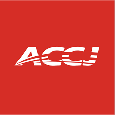

American Chamber of Commerce in Japan
ACCJ | Business Advocacy & Networking | Tokyo, Japan

At a Glance
| Founded | 1948 (during U.S. Occupation of Japan) |
|---|---|
| Headquarters | Tokyo, Japan |
| Membership | Over 3,000 members from 600 companies and 40 countries |
| Membership Tiers | Corporate, Individual, Non-resident |
| Events Annually | 500+ held by ACCJ and committees |
| Key Publication | ACCJ Journal (monthly magazine) |
| Regional Affiliation | Asia-Pacific Chambers of Commerce Association (APCAC) |
| Website | www.accj.or.jp |
Company Overview
The American Chamber of Commerce in Japan (ACCJ) is a business advocacy and networking organization representing American and international companies operating in Japan. Established in 1948, the ACCJ has evolved from a post-war business facilitation organization into the primary advocacy body for U.S. business interests in Japan, with deep government and corporate relationships spanning over 75 years.
Unlike a traditional "company," the ACCJ is a membership organization with corporate and individual member tiers. It functions as both a business networking platform (hosting 500+ annual events) and an active policy advocacy body, engaging with Japanese government agencies, the U.S. Embassy, and Japanese regulatory bodies on trade and business issues.
Organization History
Founding and Early Years (1948–1950s)
The ACCJ was established in 1948, during the U.S. Occupation of Japan (1945–1952). The chamber served as a bridge between American business interests and the emerging Japanese economy, facilitating business relationships and communication as Japan rebuilt its economy under occupation administration.
Growth and Institutionalization (1950s–1970s)
As Japan's economy recovered and entered its high-growth period, the ACCJ expanded in membership and influence. It established itself as the primary networking venue for American business executives operating in or doing business with Japan. Membership grew from founding numbers to hundreds of corporate members representing major multinational companies.
Formal Institutionalization and Advocacy (1980s–1990s)
During this period, the ACCJ formalized its advocacy role. The organization became the coordinated voice of American business on policy issues affecting U.S.-Japan trade and investment, engaging with Japanese Ministry of Economy, Trade and Industry (METI), MITI, Japanese Diet members (lawmakers), and American government agencies including the U.S. Embassy and occasionally the Office of the U.S. Trade Representative.
Contemporary Period (2000s–Present)
The ACCJ has maintained substantial influence while adapting to digital communication, hybrid events, and evolving geopolitical dynamics (including U.S.-China strategic tensions and their impact on Japan's role as a strategic ally). The organization continues as the primary business advocacy forum for American interests in Japan.
Membership Structure
Corporate Membership
Membership tiers for companies, ranging from startup/SME levels to large multinational enterprise membership. Corporate members receive voting rights, event access, publication advertising, and advocacy voice through committee participation.
Individual Membership
Business professionals employed by member companies or working in Japan can join as individuals, gaining access to most events and networking opportunities without corporate membership commitments.
Non-Resident Members
American businesses and professionals in the U.S. or other countries with interest in Japan can join as non-resident members, accessing publications and virtual events.
Governance and Organizational Structure
Board of Governors
The ACCJ is governed by a Board of Governors elected by members, typically comprising CEOs and senior executives of major multinational member companies. The Board sets strategic direction, approves advocacy positions, and ensures organizational accountability.
Committees
Functional committees focus on specific business sectors and policy areas: Customs and Trade, Financial Services, Intellectual Property, Key Technologies (semiconductors, AI, robotics), Sustainability, and others. Committees conduct research, draft policy position papers, and organize sector-specific events.
Regional Chapters
ACCJ has established chapters in Osaka, Nagoya, and other major business centers, bringing advocacy and networking activities to regions beyond Tokyo.
Core Activities: Advocacy and Events
Diet Doorknock (30+ Years)
An annual initiative where ACCJ members meet directly with Japanese Diet members (lawmakers) to advocate for specific trade and regulatory positions. This 30+ year tradition has become a notable feature of U.S.-Japan business advocacy.
D.C. Doorknock
An annual delegation to Washington, D.C., where ACCJ leadership meets with U.S. government officials, congressional members, and trade representatives to advocate for favorable trade policies toward Japan and American business interests in Japan.
Advocacy Documents and White Papers
The ACCJ publishes annual white papers outlining policy priorities, regulatory barriers to U.S. business, and specific recommendations for Japanese government action on market access, intellectual property, and trade issues.
Events and Networking (500+ Annually)
The ACCJ hosts over 500 events annually ranging from luncheon seminars (popular format for busy Tokyo executives) to full-day conferences. Topics span business sectors, policy issues, cultural exchange, and social events. Events serve dual purpose: networking + thought leadership + policy influence.
Publications
ACCJ Journal
A monthly magazine (print and digital) featuring business news, member company profiles, policy commentary, and sector analysis. It serves as the primary communication channel for the membership and a marketing platform for member companies.
Digital Content and Website
The ACCJ maintains a digital presence with news, event listings, committee updates, and policy documents.
International Affiliation
Asia-Pacific Chambers of Commerce Association (APCAC)
The ACCJ is a founding member of APCAC, a regional federation of American Chambers of Commerce throughout Asia-Pacific (Shanghai, Singapore, Bangkok, Seoul, etc.). This affiliation enables coordination on regional trade issues and shared advocacy positions.
Context for MBA Discussion
- Non-profit advocacy organization business model: How membership-based organizations sustain operations, fund advocacy, and generate member value.
- Multi-stakeholder coordination: Operating as intermediary among American multinationals (with competing interests), Japanese government, and U.S. government; navigating conflicting priorities.
- 75-year institutional history and relationships: How organizational longevity and embedded relationships create lobbying influence and government access that newer organizations cannot easily replicate.
- Geopolitical dimensions: How ACCJ's advocacy is shaped by U.S.-Japan alliance dynamics, competition with China, and broader Indo-Pacific strategic positioning.
- Trade advocacy in practice: White papers, Diet Doorknock, D.C. engagement as concrete examples of how business advocacy operates in democratic systems.